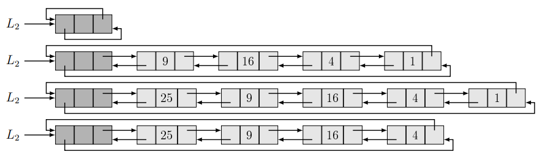

A ciklikus listát az jellemzi, hogy a fej előző pointere a lista végére, a
lista utolsó elemének következő pointere a fej elemre mutat. A fejelemes és a fejelem nélküli
ciklikus kétirányú listák (C2L) elemeinek
osztálya. Általában szoktunk használni fejelemet, mert így a listakezelés tovább egyszerűsödik.
Ezért C2L alatt alapértelmezésben fejelemes ciklikus kétirányú listát értünk.
Fejelemes ciklikus kétirányú láncolt lista (C2L):

Listaelem típusa:
A C2L elemei két pointert tartalmaznak, a $prev$ a megelőző elemre, a $next$ a
következő elemre mutat.
| $E2$ |
$+ \space key : \mathcal{T}$
$+ \space prev, next : E2^*$
$+ \space
...$ |
| $+ \space E2() \space \{ prev := next := this \}$ |
Az elem konstruktora a pointereket úgy állítja be, hogy azok magára az elemre
mutassanak! Ezt kihasználva egy új fejelemes C2L lista fejelemének létrehozása $L:= \text{new} \space E2$
utasítással történhet!
C2L listákhoz definiált műveletek:
(Az algoritmusokban használt pointerek nevének logikája: ábécé sorrendben a
három használt pointer: $p$ $q$ $r$ ez mindig három egymás utáni listaelemet jelöl a listából,
ebben
a sorrendben.)
precede():
Egy listaelem beszúrása egy másik lista elem elé. A metódus első paramétere a
beszúrandó listaelemre mutató pointer, a második paramétere arra a listaelemre mutató pointer, ami
elé az első paramétert akarjuk beszúrni.
| $p := r \rightarrow prev$ |
| $q \rightarrow prev := p$ |
| $q \rightarrow next := r$ |
| $p \rightarrow next := r \rightarrow
prev := q$ |
follow():
A precede metódushoz hasonló, itt most az első paraméterben lévő listaelem után
szúrjuk be a második paraméterben lévő listaelemet.
| $r := p \rightarrow next$ |
| $q \rightarrow prev := p$ |
| $q \rightarrow next := r$ |
| $p \rightarrow next := r \rightarrow
prev := q$ |
unlink():
A megadott listaelem kifűzése a listából. A metódus a kifűzött listaelem
pointereit önmagára állítja.
| $p := q \rightarrow prev$ |
| $r := q \rightarrow next$ |
| $p \rightarrow next := r$ |
| $r \rightarrow prev := p$ |
| $q \rightarrow prev := q \rightarrow
next := q$ |